2500 条个人笔记，编译成 400 篇互链百科，是种什么体验。
这不x上有个人把自己多年的日记、Apple Notes、iMessage 对话全部喂给 LLM，编译出了一套个人百科。
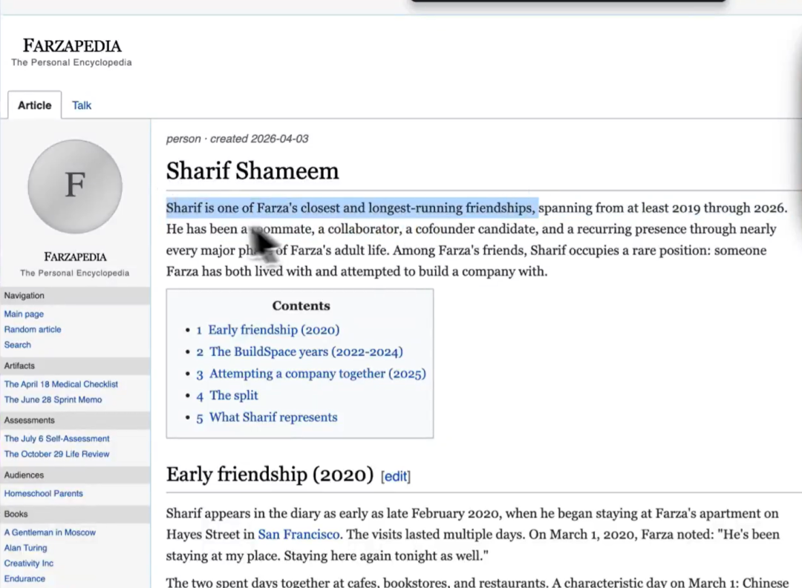
更离谱的是。
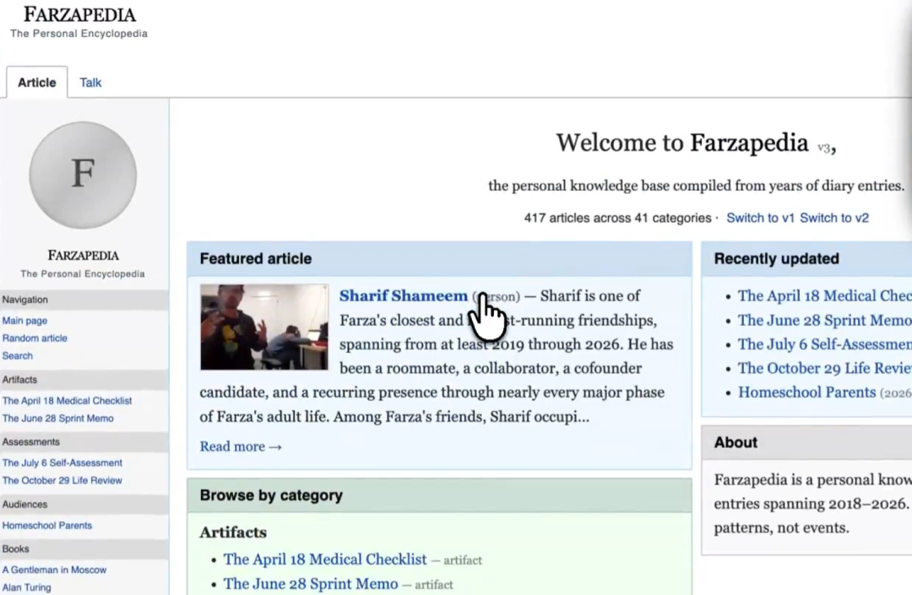
他让 Agent 去 Wiki 里找审美灵感。Agent 不光做了语义搜索，它沿着图谱关联路径，翻出了他看吉卜力纪录片的笔记、截图保存的 YC 公司落地页、连几年前存的披头士周边图片，都给翻出来了。
结果拼出了一份极其懂他的创意方案。
最近在Github上看到一个叫 LLM Wiki的项目，貌似能以工程化的方式来干类似的事。已经获得了 2300+ Star。
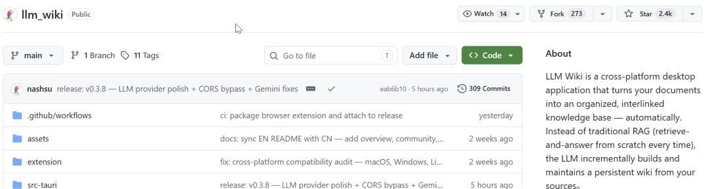
一句话概括这样项目，这是一个跨平台桌面应用。你把文档丢进去，LLM 自动帮你生成结构化、互链的知识库。而且这个知识库会随着你不断添加资料而生长。
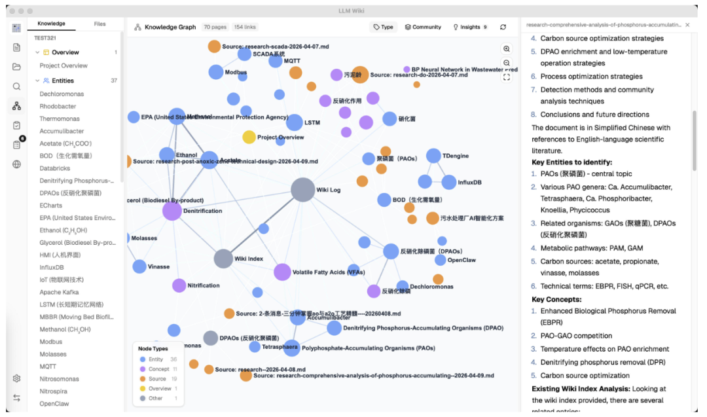
它的思路来自 Karpathy 的一条浏览量超过了1700万的帖子。
好多人都想让知识库自己"长"起来，传统 RAG 每次提问都从零检索，用完就忘。
它和传统 RAG 的核心区别，RAG 每次提问都从零检索，用完就忘，LLM Wiki 是编译一次、持续更新，知识会沉淀、会复利。
你问过的复杂问题，答案也可以回写成新页面。让探索本身也成为知识积累的一部分。
LLM Wiki 把它拆成了两步，先分析，再生成。
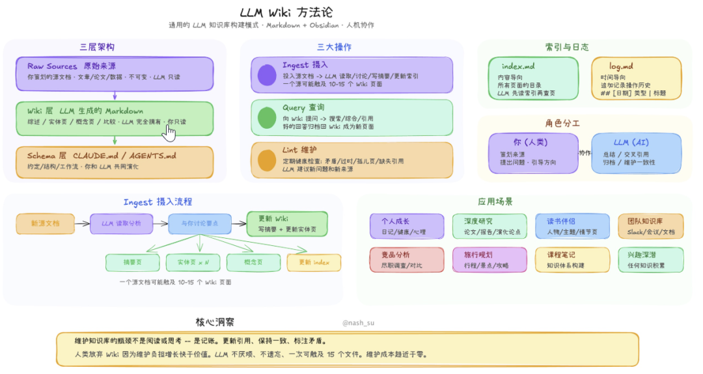
首先LLM 读取源文档，提取关键实体、概念、论点，找出和已有 Wiki 的关联与矛盾。
然后再把分析结果生成 Wiki 页面——实体页、概念页、来源摘要页，同时更新 index.md、log.md 和 overview.md。
拆开之后，LLM 不再同时做理解和创作两件事。生成的东西自然更靠谱。
举个例子。
你在做一个 AI Agent 的深度研究，陆续投入了 20 篇论文和 10 份技术报告。
分析阶段，LLM 会发现第 3 篇论文提到的"Tool Use"和第 17 篇的"Function Calling"其实是同一个概念的不同表述。还会标记出第 5 篇和第 12 篇在 Agent 自主性上的观点矛盾。
生成阶段，LLM 把它们合并为一个概念页，在矛盾处标注分歧来源。
这些洞察，单独阅读任何一篇论文都得不到。
LLM Wiki 不只是生成页面，它还在页面之间构建了一张知识图谱。
相关性它用了四个信号来决定。
技术用的是 sigma.js + graphology + ForceAtlas2 来实现的页面可视化。
节点按页面类型或社区着色，大小按链接数缩放。边的粗细和颜色按相关性权重显示，绿色代表强关联，灰色是弱关联，鼠标悬停时邻居节点会高亮显示出来，非邻居变暗，边高亮显示相关性分数标签。
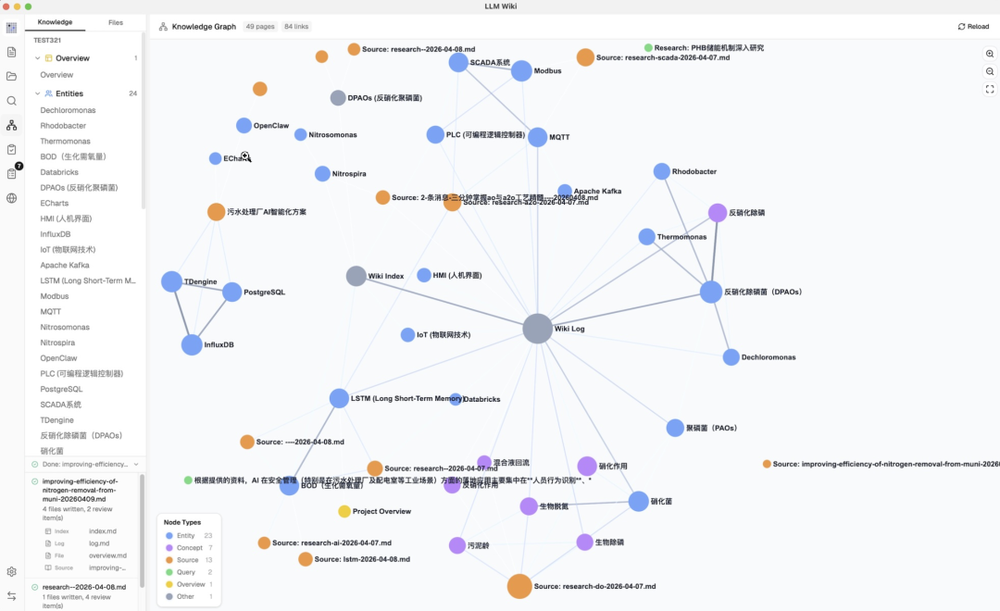
基于这张图谱，Louvain 算法自动发现知识集群。
目前支持两种着色模式切换，按类型看分布和按社区看聚类。
每个社区还会计算内聚度评分。低于 0.15 的集群会被标记为"稀疏社区"，提示你可能需要补充资料。
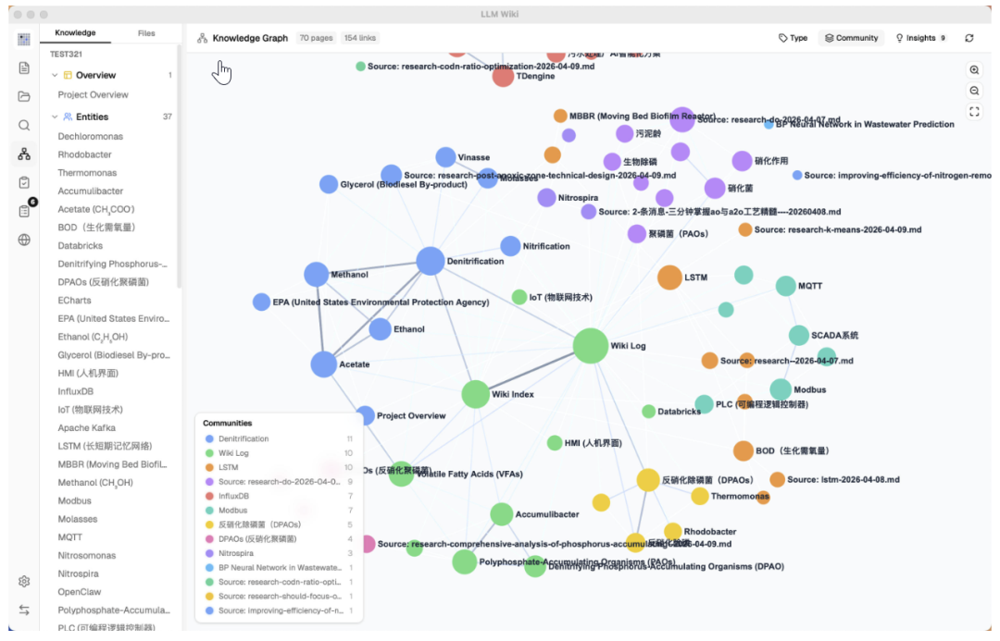
图谱看着挺炫，但真正好用的是后面的“图洞察”功能。
系统会自动分析结构，然后标出三类问题。
几乎没人链过来，被标记为孤立页面，判断依据入度 ≤ 1，容易被忽略。 里面页面互相引用太少，就是稀疏社区，要补一补。 如果连着3个以上集群的关键页面，就标记成桥接节点，这表示好几个知识领域的交叉点。
比如你读《三体》的时候，图洞察可能会告诉你，黑暗森林法则是个桥接节点，同时连着宇宙社会学和威慑纪元两个集群。
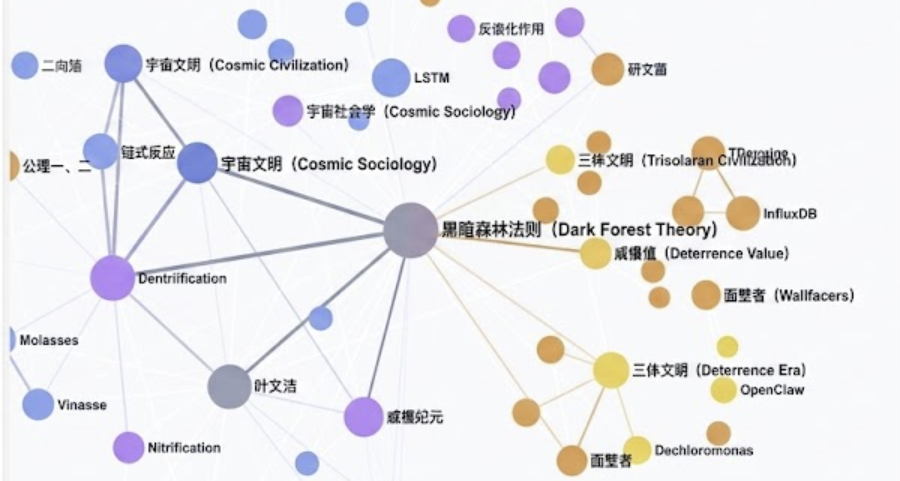
你点击任意洞察卡片，图谱中对应的节点和边会高亮显示，旁边还有 Deep Research 按钮——点一下，LLM 自动生成搜索主题、联网搜索、把结果摄入 Wiki。一步补全。
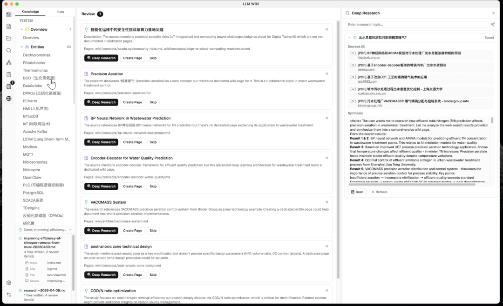
Karpathy 原版只有 Schema（Wiki 该怎么组织），没有 Purpose（Wiki 到底为什么存在）。
LLM Wiki 多加了一个 purpose.md 文件，让你明确定义：这个 Wiki 的目标是什么、核心问题有哪些、研究范围划到哪儿，每次读内容、查东西的时候，都会先看这个 purpose.md。
甚至它还能根据你最近的使用习惯主动提醒——“你最近老查 AI Agent，要不要把研究方向调整一下？”
没有 purpose.md，LLM 只知道“怎么写”，有了它，LLM 才真正明白“为什么写”。
项目一共内置了 5 个场景模板：
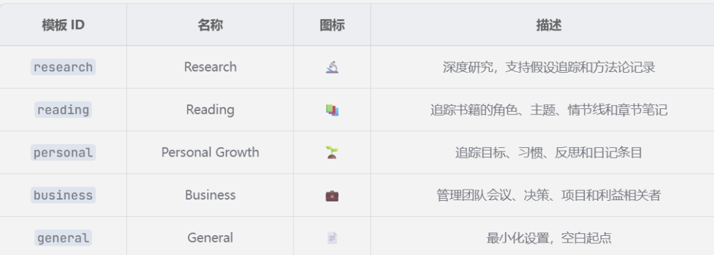
Research（深度研究）、Reading（读书笔记）、Personal Growth（个人成长）、Business（商业分析）、General（通用）。
对于同一个文档集合，不同的 purpose 会产出完全不同的 Wiki。
原理是什么？其实背后跑的是一个 4 阶段管线。
先分词搜索找出候选页面，然后用图扩展找更多相关页面，接着按预算控制分配上下文，最后把完整内容组装好扔给 LLM。
上下文窗口可以自己配置，4K 到 1M tokens 都可以。分配比例大概是：60% 给 Wiki 页面，20% 给聊天历史，5% 给索引，15% 给系统提示。
LLM 拿到的不是摘要，而是每个页面的完整内容。回答的时候，它会按编号引用具体来源。
另外还支持向量语义搜索，用 LanceDB 存的，能接任何 OpenAI 兼容的接口。基准测试里，召回率从 58.2% 提升到了 71.4%。
整个 Wiki 目录就是标准 Markdown 文件，[[wikilink]] 语法交叉引用，每个页面带 YAML frontmatter。
直接用 Obsidian 打开就是一个完整 Vault。图谱、反向链接、搜索全都能用。
就算哪天项目不更新了，你的知识库还在 Obsidian 里活得好好的。
官方也给了几个应用案例。
深度研究：
你不停往 Wiki 里扔论文和技术报告。新资料进来后，系统会自动更新老页面，还会标出哪里观点冲突。
最后它能综合 5 篇以上的资料，给你一个单独看任何一篇都得不到的洞察。
读书 Wiki：
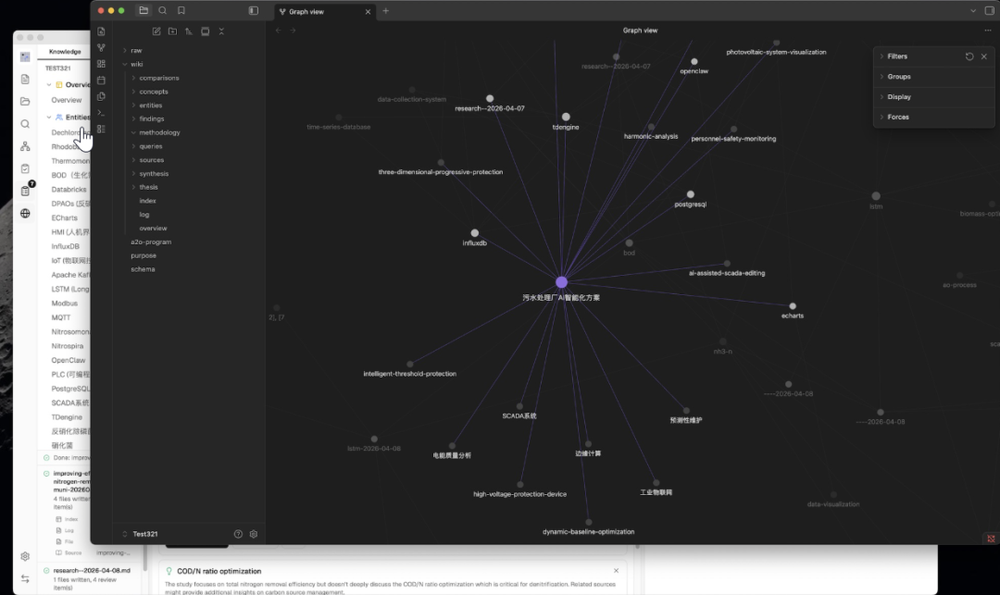
边读书边把章节笔记丢进去，LLM 就会自动给人物、主题、情节线索建独立页面。
读完一本书，你就拥有了一个专属于自己的伴读 Wiki。
Farzapedia：
就像前面那个例子，Agent 顺着图谱，从“吉卜力纪录片”一路走到“YC 落地页”，再跳到“披头士周边”，最后拼出一个跨领域但非常有个性的创意方案。
看到这你也想试试？安装有两种方式。
第一直接下载安装包。
到GitHub Releases下载对应系统的安装包。macOS .dmg，Windows .msi，Linux .deb / .AppImage都有。
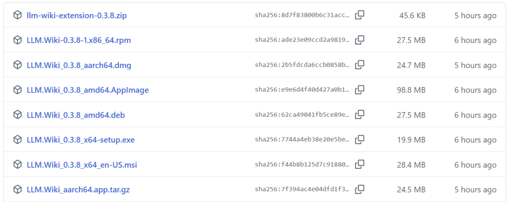
装好启动，配置 LLM 端点就行。想零成本本地可以装 Ollama 跑本地大模型，这样数据完全不出本机。
或者用Chrome 剪藏一键摄入。
官方也提供了 Chrome 扩展（Manifest V3），Mozilla Readability.js 提取正文，Turndown.js 转 Markdown，一键剪藏。
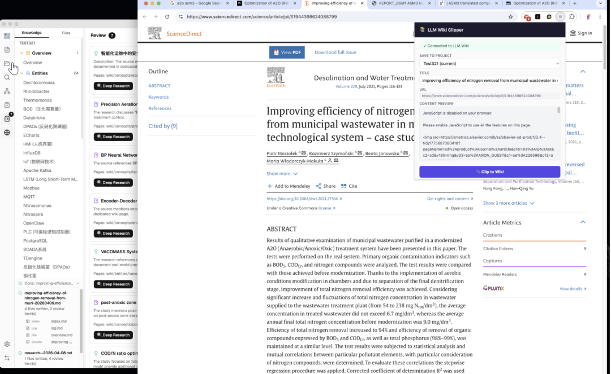
支持多项目选择，剪藏后自动触发两步摄入。配合文件夹导入，批量处理也方便。
支持的格式有PDF、DOCX、PPTX、XLSX ，导入后 Activity Panel 实时显示进度，处理完就能看到生成的知识树和图谱关联。
最后说说
有了 LLM Wiki，相当于给它配了一套会生长的知识体系，新增资料自动更新、提问答案沉淀成页面、定期排查矛盾。
你不需要每次都从零开始，知识会自己积累、自己关联。
当然，目前还有个坎，Token 消耗是现实问题，两步摄入意味着双倍 Token。本地模型能缓解但效果打折扣。
想把散落的个人资料整理成知识库，不妨试一下。
项目基于 GPL 3.0 协议开放，感兴趣的同学可以去 GitHub 看看。
开源地址：https://github.com/nashsu/llm_wiki
既然看到这了，欢迎随手点赞、在看、转发，也可以给我个星标⭐，我们下期见！